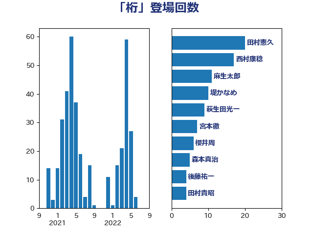

単語「桁」

| 田村憲久 | 自由民主党 | 20 回 |
| 西村康稔 | 自由民主党 | 17 回 |
| 麻生太郎 | 自由民主党 | 11 回 |
| 堤かなめ | 立憲民主党 | 10 回 |
| 萩生田光一 | 自由民主党 | 9 回 |
| 宮本徹 | 日本共産党 | 7 回 |
| 櫻井周 | 立憲民主党 | 6 回 |
| 森本真治 | 立憲民主党 | 5 回 |
| 後藤祐一 | 立憲民主党 | 4 回 |
| 田村貴昭 | 日本共産党 | 4 回 |
| 高橋千鶴子 | 日本共産党 | 4 回 |
| 伊藤孝恵 | 国民民主党 | 3 回 |
| 倉林明子 | 日本共産党 | 3 回 |
| 嘉田由紀子 | 無所属 | 3 回 |
| 太栄志 | 立憲民主党 | 3 回 |
| 山本剛正 | 日本維新の会 | 3 回 |
| 櫛渕万里 | れいわ新選組 | 3 回 |
| 浅野哲 | 国民民主党 | 3 回 |
| 石垣のりこ | 立憲民主党 | 3 回 |
| 竹谷とし子 | 公明党 | 3 回 |
| 谷合正明 | 公明党 | 3 回 |
| 階猛 | 立憲民主党 | 3 回 |
| 一谷勇一郎 | 日本維新の会 | 2 回 |
| 井上信治 | 自由民主党 | 2 回 |
| 北側一雄 | 公明党 | 2 回 |
| 吉田とも代 | 日本維新の会 | 2 回 |
| 塩川鉄也 | 日本共産党 | 2 回 |
| 大西健介 | 立憲民主党 | 2 回 |
| 守島正 | 日本維新の会 | 2 回 |
| 小池晃 | 日本共産党 | 2 回 |
| 尾崎正直 | 自由民主党 | 2 回 |
| 林芳正 | 自由民主党 | 2 回 |
| 柳ヶ瀬裕文 | 日本維新の会 | 2 回 |
| 梶山弘志 | 自由民主党 | 2 回 |
| 河野義博 | 公明党 | 2 回 |
| 泉健太 | 立憲民主党 | 2 回 |
| 浜口誠 | 国民民主党 | 2 回 |
| 湯原俊二 | 立憲民主党 | 2 回 |
| 片山大介 | 日本維新の会 | 2 回 |
| 竹内真二 | 公明党 | 2 回 |
| 自見はなこ | 自由民主党 | 2 回 |
| 舩後靖彦 | れいわ新選組 | 2 回 |
| 船橋利実 | 自由民主党 | 2 回 |
| 菅義偉 | 自由民主党 | 2 回 |
| 近藤和也 | 立憲民主党 | 2 回 |
| 遠藤良太 | 日本維新の会 | 2 回 |
| 野田佳彦 | 立憲民主党 | 2 回 |
| 鈴木俊一 | 自由民主党 | 2 回 |
| 鎌田さゆり | 立憲民主党 | 2 回 |
| 高木かおり | 日本維新の会 | 2 回 |
| 上杉謙太郎 | 自由民主党 | 1 回 |
| 下条みつ | 立憲民主党 | 1 回 |
| 中島克仁 | 立憲民主党 | 1 回 |
| 中西健治 | 自由民主党 | 1 回 |
| 中谷真一 | 自由民主党 | 1 回 |
| 井上貴博 | 自由民主党 | 1 回 |
| 伊波洋一 | 無所属 | 1 回 |
| 伊藤岳 | 日本共産党 | 1 回 |
| 務台俊介 | 自由民主党 | 1 回 |
| 勝目康 | 自由民主党 | 1 回 |
| 古川元久 | 国民民主党 | 1 回 |
| 古賀之士 | 立憲民主党 | 1 回 |
| 古賀友一郎 | 自由民主党 | 1 回 |
| 吉川元 | 立憲民主党 | 1 回 |
| 吉良州司 | 無所属 | 1 回 |
| 土田慎 | 自由民主党 | 1 回 |
| 太田房江 | 自由民主党 | 1 回 |
| 安江伸夫 | 公明党 | 1 回 |
| 室井邦彦 | 日本維新の会 | 1 回 |
| 小野泰輔 | 日本維新の会 | 1 回 |
| 山下芳生 | 日本共産党 | 1 回 |
| 山岡達丸 | 立憲民主党 | 1 回 |
| 山岸一生 | 立憲民主党 | 1 回 |
| 山崎正恭 | 公明党 | 1 回 |
| 山崎誠 | 立憲民主党 | 1 回 |
| 山添拓 | 日本共産党 | 1 回 |
| 山際大志郎 | 自由民主党 | 1 回 |
| 岡本あき子 | 立憲民主党 | 1 回 |
| 岡本三成 | 公明党 | 1 回 |
| 岡田克也 | 立憲民主党 | 1 回 |
| 岸田文雄 | 自由民主党 | 1 回 |
| 工藤彰三 | 自由民主党 | 1 回 |
| 平井卓也 | 自由民主党 | 1 回 |
| 平木大作 | 公明党 | 1 回 |
| 後藤茂之 | 自由民主党 | 1 回 |
| 志位和夫 | 日本共産党 | 1 回 |
| 打越さく良 | 立憲民主党 | 1 回 |
| 斎藤アレックス | 国民民主党 | 1 回 |
| 斎藤嘉隆 | 立憲民主党 | 1 回 |
| 斎藤洋明 | 自由民主党 | 1 回 |
| 末松義規 | 立憲民主党 | 1 回 |
| 杉久武 | 公明党 | 1 回 |
| 東徹 | 日本維新の会 | 1 回 |
| 枝野幸男 | 立憲民主党 | 1 回 |
| 柴山昌彦 | 自由民主党 | 1 回 |
| 森山浩行 | 立憲民主党 | 1 回 |
| 沢田良 | 日本維新の会 | 1 回 |
| 河野太郎 | 自由民主党 | 1 回 |
| 渡辺周 | 立憲民主党 | 1 回 |
| 田村智子 | 日本共産党 | 1 回 |
| 田畑裕明 | 自由民主党 | 1 回 |
| 石井苗子 | 日本維新の会 | 1 回 |
| 礒崎哲史 | 国民民主党 | 1 回 |
| 稲富修二 | 立憲民主党 | 1 回 |
| 稲津久 | 公明党 | 1 回 |
| 紙智子 | 日本共産党 | 1 回 |
| 緑川貴士 | 立憲民主党 | 1 回 |
| 羽生田俊 | 自由民主党 | 1 回 |
| 舟山康江 | 国民民主党 | 1 回 |
| 茂木敏充 | 自由民主党 | 1 回 |
| 蓮舫 | 立憲民主党 | 1 回 |
| 藤井比早之 | 自由民主党 | 1 回 |
| 西村智奈美 | 立憲民主党 | 1 回 |
| 赤木正幸 | 日本維新の会 | 1 回 |
| 赤羽一嘉 | 公明党 | 1 回 |
| 足立康史 | 日本維新の会 | 1 回 |
| 辻元清美 | 立憲民主党 | 1 回 |
| 辻清人 | 自由民主党 | 1 回 |
| 金城泰邦 | 公明党 | 1 回 |
| 鈴木憲和 | 自由民主党 | 1 回 |
| 鈴木英敬 | 自由民主党 | 1 回 |
| 阿部知子 | 立憲民主党 | 1 回 |
| 青柳仁士 | 日本維新の会 | 1 回 |
| 音喜多駿 | 日本維新の会 | 1 回 |
| 鬼木誠 | 立憲民主党 | 1 回 |